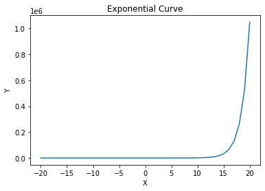

Generalised linear model-Linear Regression¶
Now let’s dicuss about a very intresting topic called Generalised linear model as the name suggest it is generalisation of linear model, linear model is the linear regression technique in which we were assuming a linear relation between our variables.
The GLM(generalised linear model) generalizes linear regression by allowing the linear model to be related to the response variable via a link function and by allowing the magnitude of the variance of each measurement to be a function of its predicted value. generalization of ordinary linear regression that allows for the response variable to have an error distribution other than the normal distribution.
Generalized linear models were formulated by John Nelder and Robert Wedderburn as a way of unifying various other statistical models, including linear regression, logistic regression and Poisson regression.
let us first understand some term that are used with context to GLM
Responce Variable is the variable whose expected value is getting predicted by our model in our case \(Y\).
Predictor is the set of observed values relating to our response variable.
Link fuction in a Generalized Linear Model maps a non-linear relationship to a linear one, which means you can fit a linear model to the data.More specifically, it connects the predictors in a model with the expected value of the response (dependent) variable in a linear way.
To summarize things we can say that-
GLM models allow us to build a linear relationship between the response and predictors, even though their underlying relationship is not linear. This is made possible by using a link function, which links the response variable to a linear model.`
Need Of GLM¶
As we discussed that that we use to glm to derive a relation between response variable and predictor but it was same with the linear regression let’s see some cases where linear regression will fail to predict accurately but using GLM to that case will improve our accuracy-
Linear Regression model is not suitable if,
1. The relationship between X and y is not linear. There exists some non-linear relationship between them. For example, y increases exponentially as X increases.just like in below given graph.

2. Variance of errors in y (commonly called as Homoscedasticity in Linear Regression), is not constant, and varies with X.
3. Response variable is not continuous, but discrete/categorical. Linear Regression assumes normal distribution of the response variable, which can only be applied on a continuous data.
Do remember That basic underlying of GLM is still a linear model but with the help of link function and other mathematical function we generalise that linear model to work in other cases too.
GLM Equation¶
There is way to identify and calculate the required parameter such as link function and other to see if GLM will work on not. if we can write the the equation of the probability distribution in the form of equation mentioned value then a linear model can be trained for that distribution of data.
\(\large{P(Y)=b(Y)\times e^{\Large{(\eta T(Y)-a(\eta))}}}\)
As you can see the above written equation belongs to a exponential family,if any distribution’s probabilty equation belongs to a exponential family and can be written in above mentioned form then a linear model can be trained for it and then along with link function will be fit to predict.
Each of the above equation’s term has it’s meaning, let’s look at it one by one-
1. Expected value of the function \(T(Y)\) will be our final prediction.It can be written as
\(E_x[T(Y)]\) will be our prediction
2. \(\large\eta\) is the linear predictor or value that our linear model is going to predict.
Therefore, as seen in earlier in multivariable linear regression section prediction is the dot product of our data(X) and our parameters(W)-
\(\large\eta=XW\)
3. \(\large{b(Y)}\) and \(\large{T(Y)}\) is the function of term of Y
4. \(\large{a(\eta)}\) is the function of term of \(\eta\) or you can say that function of term XW
You can refer to following link for in-depth understanding and intuition of GLM- https://en.wikipedia.org/wiki/Generalized_linear_model
GLM For Normal Distribution¶
As you know in case of linear regression we assumed a normal distribution of the data and applied a linear model on it, Now let’s see using GLM equation comparison that a normal distribution’s data can be predicted using a linear model or not we know it intuitively that it will, but let see it mathematically.
let’s assume Y to be normally distributed with mean be \(\mu\) and standard deviation 1
\({Y = N(\mu,1)}\)
Therefore,
\(\large{{\displaystyle P(Y)={\frac {1}{{\sqrt {2\pi }}}}e^{-{\frac {1}{2}}\left({ {Y-\mu }}\right)^{2}}}}\)
As we know for linear model to work on a distribution it is neccessary for that distribution to belong to exponential family(\(\large e\)). Our normal distribution satisfies this condition now let’s try to write the equation of normal distribution in form of Generalised Linear Model’s equation-
\({{\displaystyle P(Y)={\dfrac {1}{{\sqrt {2\pi }}}}e^{-{\dfrac {1}{2}}\left({ {Y^2+\mu^2-2\times \mu \times Y }}\right)}}}\)
\({{\displaystyle P(Y)={\dfrac {1}{{\sqrt {2\pi }}}}e^{-\frac{Y^2}{2}}\times e^{(\mu\times Y-\dfrac{\mu^2}{2})}}}\)
Now let’s compare to the general equation and find out equation of functions of GLM in case of Normal Distribution.
\({{\displaystyle P(Y)={\dfrac {1}{{\sqrt {2\pi }}}}e^{-\frac{Y^2}{2}}\times e^{(\mu \times Y-\dfrac{\mu^2}{2})}}}\)
\(\large{P(Y)=b(Y)\times e^{\Large{(\eta T(Y)-a(\eta))}}}\)
On comparing the Two equation we can find out that-
\({b(Y)={\frac {1}{{\sqrt {2\pi }}}}e^{-\frac{Y^2}{2}}}\)
\({\eta=\mu}\)
\({T(Y)=Y}\)
\({a(\eta)=\frac{\mu^2}{2}}\)
As we saw above \(\eta=\mu\) Therfore,
\(\large{a(\eta)=\frac{\eta^2}{2}}\)
As dicussed earlier in this section \(\large\eta\) is the linear predictor or value that our linear model is going to predict, Therfore,
\(\normalsize{\eta=XW}\) so we can even replace \(\eta\) as \(XW\)
Also we know that Expected value of the function \(T(Y)\) will be our final prediction which can be written as
\(\normalsize{E_x[T(Y)]}\) will be our prediction
Frome above derived relations we can say that.
\(\normalsize{E_x[Y]}\) will be our prediction.
Expected value of a variable is the mean of that variable therefore as Y belongs to a normal distribution we assumed \(\mu\) to be it’s mean Therefore,
\(\normalsize{E_x[Y]=\mu}\)
\(\normalsize{E_x[Y]=\eta}\)
\(\normalsize{E_x[Y]=XW}\)
Therefore, Normal distribution can be predicted using linear model.
Assumptions of GLM:¶
Similar to Linear Regression Model, there are some basic assumptions for Generalized Linear Models as well. Most of the assumptions are similar to Linear Regression models, while some of the assumptions of Linear Regression are modified.
Data should be independent and random (Each Random variable has the same probability distribution).
The response variable y does not need to be normally distributed, but the distribution is from an exponential family (e.g. binomial, Poisson, multinomial, normal)
The original response variable need not have a linear relationship with the independent variables, but the transformed response variable (through the link function) is linearly dependent on the independent variables.
Homoscedasticity (i.e constant variance) need not be satisfied. Response variable Error variance can increase, or decrease with the independent variables.
Errors are independent but need not be normally distributed
In this section we saw GLM using linear regression further we will se GLM on other probability distribution and as we will be willing to estimate it using linear model we will require GLM in upcomimg sections in Loistic regression you will se so.